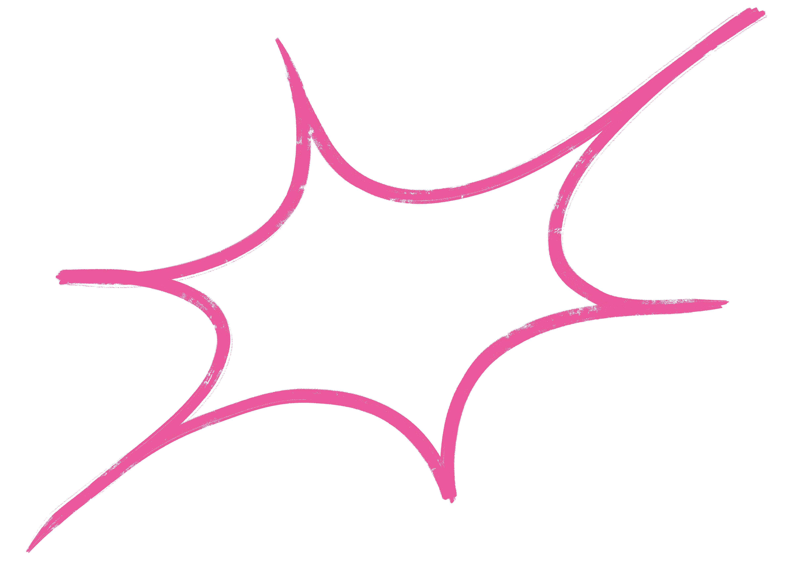
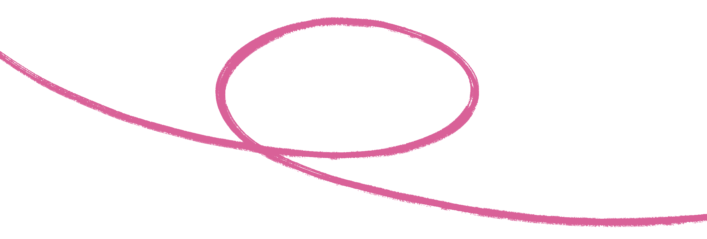
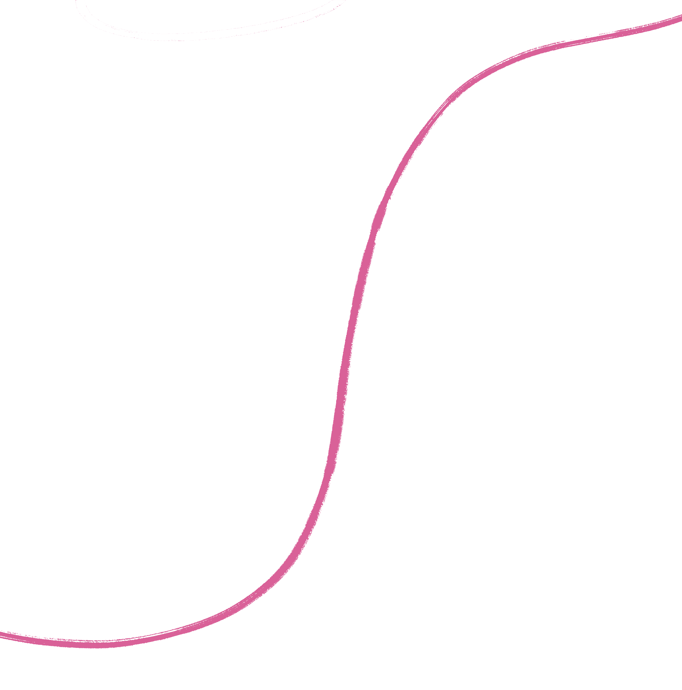
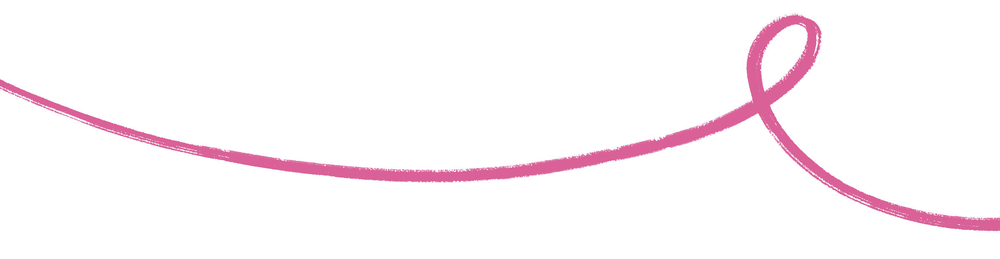
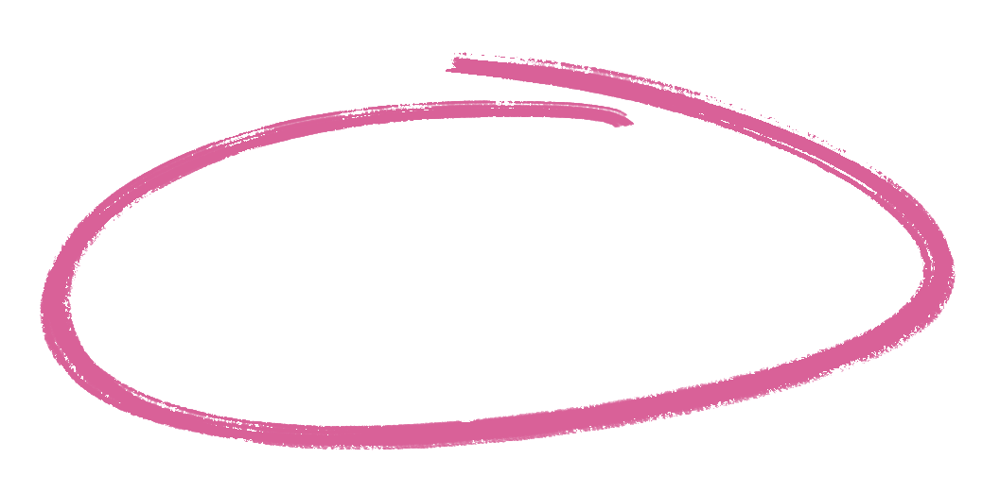

Per partecipare al contest ti chiediamo di fotografare ciò che per te significa libertà. Non una definizione astratta, ma un’esperienza reale e personale. Un momento della tua quotidianità, anche legato alla vita universitaria, in cui senti spazio per scegliere, agire, esprimerti. Può essere qualcosa di semplice o di significativo, individuale o condiviso, spontaneo o costruito. Ciò che conta è che l’immagine rappresenti un’esperienza autentica.
Puoi raccontarla con una singola fotografia oppure con una sequenza coerente (fino a 5 immagini). Ogni progetto deve essere accompagnato da una breve didascalia (2-3 righe per immagine o per la serie) che spieghi cosa hai fotografato e perché rappresenta per te la libertà.
Il premio per la miglior sequenza consiste in la macchina fotografica analogica Olympus OM10 con ottica 50mm.
Il premio per la miglior fotografia singola riceverà un corso di formazione con il professionista del settore Gabriele Lopez sull’argomento che più si vuole approfondire.
La premiazione ufficiale avrà luogo il 23/04 alle 20:45, sul palco del Mu.D in piazza Leonardo Da Vinci, Milano.
Il contest aprirà il 9 marzo e sarà possibile inviare. le proprie fotografie fino alle 12:00 del 6 aprile.
Ti consigliamo di non aspettare l’ultimo giorno per l’invio, così da avere il tempo di verificare che tutto sia corretto.
Per qualsiasi dubbio, problema tecnico o domanda sulla partecipazione, puoi scriverci via mail (mud.contestfotografico@gmail.com), saremo felici di aiutarti e trovare insieme una soluzione.
La giuria del contest sarà composta da:
Luca Fiore / critico e autore attivo nel campo della fotografia contemporanea.
Nadia Righi / storica dell’arte e direttrice del Museo Diocesano Carlo Maria Martini di Milano.
Piero Pozzi / docente di fotografia presso il Politecnico di Milano.
Saranno selezionate 19 fotografie singole e una sequenza di 5 scatti. I 20 finalisti verranno contattati direttamente via mail.
Tutti gli scatti inviati saranno comunque saranno proiettati su schermo durante il Mu.D. Le 19 fotografie selezionate e la sequenza vincitrice saranno esposte tramite stampa in uno spazio dedicato all’evento Mu.D, che si terrà dal 21 al 23 aprile in Piazza Leonardo da Vinci, Milano.
Invia il tuo materiale alla mail mud.contestfotografico@gmail.com.
SPECIFICHE TECNICHE:
• Formato .jpg
• Risoluzione 300 dpi
• Peso massimo 5 MB per file
NELLA MAIL INSERISCI:
• Nome e cognome
• Eventuale tag Instagram
• Titolo del progetto (facoltativo)
• Didascalia/e (2-3 righe per immagine o sequenza)
HAI DUBBI TECNICI?
Puoi partecipare anche con il tuo telefono, non è necessario avere attrezzatura professionale. Se non hai dimestichezza con formati, dpi o conversioni, inviaci comunque il file alla massima qualità disponibile e ti aiuteremo noi a verificare che sia corretto.
Se preferisci sistemare l’immagine in autonomia, puoi utilizzare uno strumento gratuito e semplice come ILoveIMG, che permette di convertire file HEIF/HEIC in JPG, comprimere le immagini e modificarne dimensioni e qualità in pochi passaggi.
L’importante è l’idea, per gli aspetti tecnici troviamo insieme la soluzione :)




